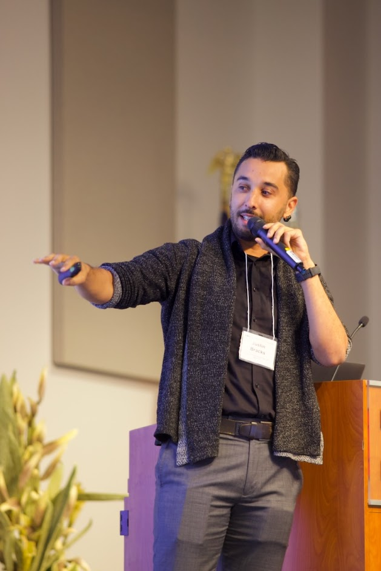
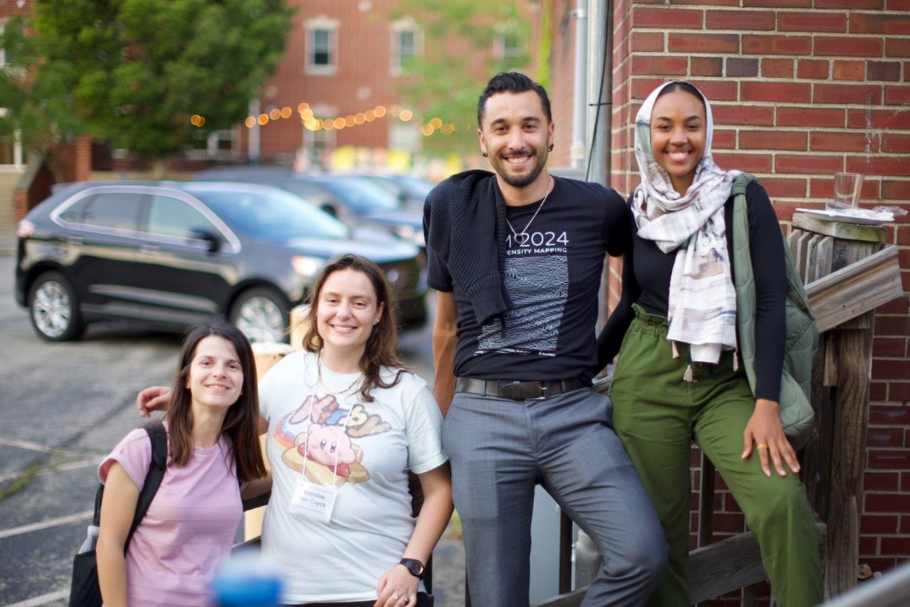

Suborbital instrumentation
I contributed to the development of the Terahertz Intensity Mapper, a balloon-borne far-infrared spectrometer targeting [CII] emission across intermediate redshifts.
Experimental astrophysics · Suborbital instrumentation · Line-intensity mapping
I build and characterize astronomical instruments, then use their measured performance to design new probes of galaxy evolution, cosmic star formation, and the baryon cycle.
I am a joint UCLA/Caltech postdoctoral scholar funded by the Cal-Bridge Postdoctoral Program. My work connects cryogenic kinetic inductance detector arrays, balloon-borne far-infrared instrumentation, and multi-tracer survey forecasting for line-intensity mapping experiments.
Research
My research sits at the interface of far-infrared instrumentation, detector characterization, and observational cosmology. I specialize in line-intensity mapping and galaxy-survey cross-correlations as tools for studying dust-obscured star formation and the baryon cycle across cosmic time.
Recent work includes forecasts for cross-correlating the Terahertz Intensity Mapper with Euclid galaxy surveys, and multi-tracer forecasts involving [CII], CO, H I 21 cm, and Hα-selected galaxies. These measurements are designed to connect large-scale structure to the astrophysics of gas reservoirs, star formation, and galaxy evolution.
I contributed to the development of the Terahertz Intensity Mapper, a balloon-borne far-infrared spectrometer targeting [CII] emission across intermediate redshifts.
My detector work includes array-scale characterization of kinetic inductance detectors, resonator fitting, responsivity estimation, and detector noise analysis under dark and optical loading conditions.
I led development of a modular power breakout system for TIM, including subsystem definition, testing, documentation, and integration with the broader balloon payload.

Current directions
I am interested in the technologies and analysis methods that make faint, diffuse baryonic components observable: balloon payloads, sensitive detector systems, spectroscopic mapping, cross-correlation statistics, and survey design. I am especially excited by projects that connect instrument development to new measurements of the circumgalactic medium, intergalactic medium, dust-obscured star formation, and the evolution of gas around galaxies.
Selected publications
J. S. Bracks, R. P. Keenan, S. Agrawal, et al. Submitted to The Astrophysical Journal, 2026.
S. Agrawal, J. E. Aguirre, J. S. Bracks, et al. Submitted to JCAP, 2026.
D. P. Marrone, J. E. Aguirre, J. S. Bracks, et al. SPIE, 2023.
Mentoring and community
Alongside my research, I support the Cal-Bridge community through doctoral-program leadership, scholar professional development, alumni advising, and conference organization. I am committed to building research environments where students can develop as scientists, engineers, collaborators, and whole people.

Selected talks
Contact
Email: jbracks@astro.ucla.edu
Add links here for Google Scholar, ORCID, GitHub, ADS, and a current CV.